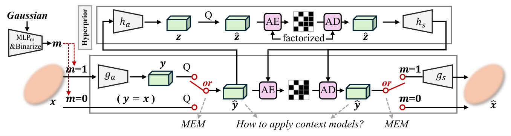
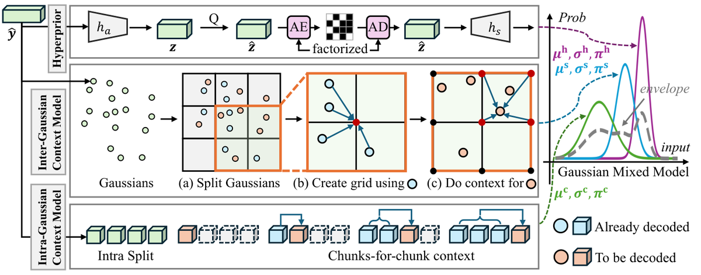
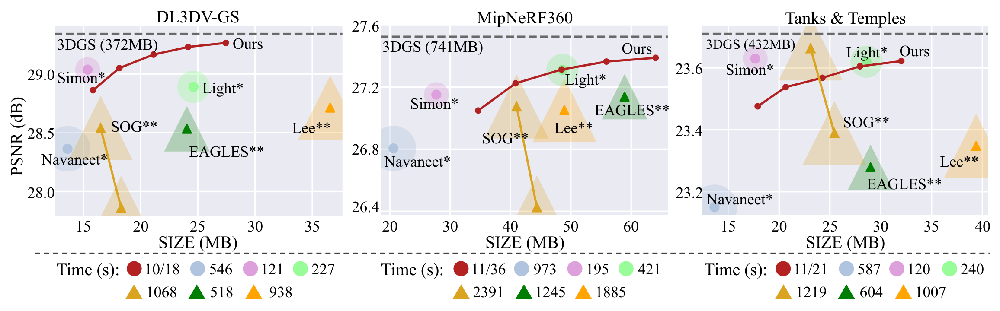
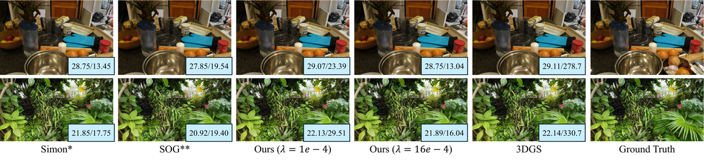
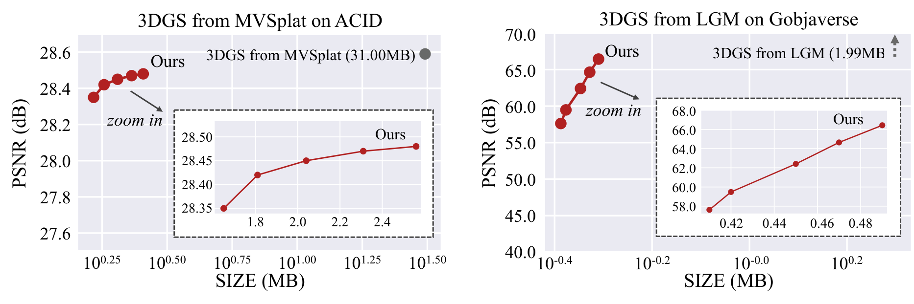
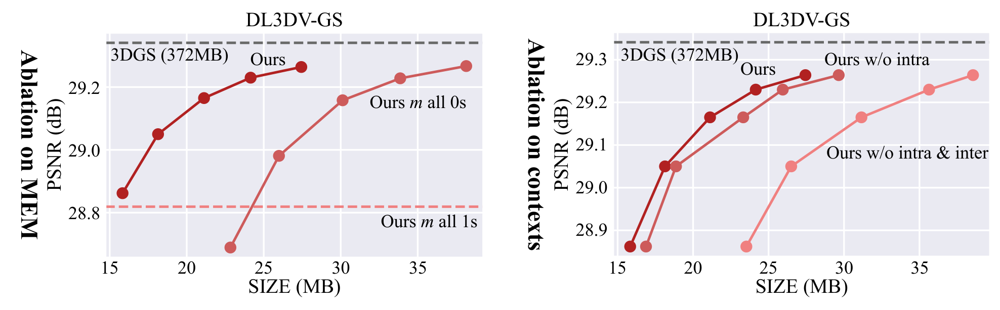

Fast Feedforward 3D Gaussian Splatting Compression
简单摘要
随着 3D 高斯泼溅 (3DGS) 推进新颖视图合成的实时和高保真渲染，存储要求对其广泛采用提出了挑战。论文的基本思路是把 尽管已经提出了各种压缩技术，但现有技术存在一个共同的限制 放进同一条解决链路里处理。
进一步看，对于任何现有的 3DGS，需要针对每个场景进行优化才能实现压缩，从而导致压缩缓慢且缓慢。最后得到的主要结论是：为了解决这个问题，我们引入了 3D Gaussian Splatting 快速压缩 (FCGS)，这是一种无需优化的模型，可以在单次前馈传递中快速压缩 3DGS 表示，从而将压缩时间从几分钟缩短到几秒。


然而，大量的高斯函数带来了相当大的存储挑战，阻碍了其更广泛的应用。论文的基本思路是把 为了解决与 3DGS 相关的存储挑战，已经开发了各种压缩方法，如 中所调查的 放进同一条解决链路里处理。
进一步看，itemize 这些压缩技术虽然有效，但有一个共同的局限性。最后得到的主要结论是：为了应对这一挑战，我们提出了一种新颖的方法。
核心创新
这篇工作的第一个关键点，在于它没有停留在模块堆叠层面，而是重新整理了问题的切入方式：尽管已经提出了各种压缩技术，但现有技术存在一个共同的限制。
第二个重要变化是：为了解决这个问题，我们引入了 3D Gaussian Splatting 快速压缩 (FCGS)，这是一种无需优化的模型，可以在单次前馈传递中快速压缩 3DGS 表示，从而将压缩时间从几分钟缩短到几秒。这让方法不仅给出结果，也把为什么这样设计说得更清楚。
从整体效果看，为了提高压缩效率，我们提出了一种多路径熵模块，它将高斯属性分配给不同的熵约束路径，以在大小和保真度之间取得平衡。这也是它和单纯工程拼装方案拉开差距的地方。
技术细节
从方法链路看，系统首先处理的是：这些压缩技术虽然有效，但有一个共同的局限性。接下来真正起关键作用的是：与之前降低参数值或改变 3DGS 结构从而需要额外微调的方法相比，FCGS 旨在保留 3DGS 的值和结构完整性，从而实现免优化设计。这样安排直接带来的收益是：多路径熵模块（MEM）根据基于值的原则设计，推导出掩码，确定属性是否应该直接量化以进行压缩或通过自动编码器进行处理。在训练和推理阶段，论文还额外考虑了：基于 MEM 确定的掩模并受到基于结构的原则的启发，我们提出了高斯间和高斯内上下文模型，可以有效捕获高斯属性之间的结构关系。这组公式用于定义模型中的变量关系和训练目标。建议先看左侧要预测的对象，再看右侧每一项如何约束优化方向。该公式用于定义核心计算关系。阅读时先看左侧目标量，再看右侧由 C、i、c、j 等变量构成的约束和聚合方式。该公式用于定义核心计算关系。阅读时先看左侧目标量，再看右侧由 x、g_s、Q、g_a 等变量构成的约束和聚合方式。该公式用于定义核心计算关系。阅读时先看左侧目标量，再看右侧由 f、v、k、y 等变量构成的约束和聚合方式。这组公式用于定义模型中的变量关系和训练目标。建议先看左侧要预测的对象，再看右侧每一项如何约束优化方向。该公式用于定义核心计算关系。阅读时先看左侧目标量，再看右侧由 L、I、I、N 等变量构成的约束和聚合方式。
$$ G(\bm{l}) = \exp{\left(-\frac{1}{2}(\bm{l}-\bm{\mu}^\text{g})^\top\bm{\Sigma}^{-1}(\bm{l}-\bm{\mu}^\text{g})\right)}\;, $$
$$ \bm{C} = \sum_{i} {\bm{c}_i\alpha_i\prod_{j=1}^{i-1}\left(1-\alpha_j\right)} $$
$$ \hat{\bm{x}}_i = g_s(\texttt{Q}(g_a(\bm{x}_i)))\times m_i + \texttt{Q}(\bm{x}_i)\times (1-m_i), \; m_i=\texttt{Sig}(\text{MLP}_\text{m}(\bm{f}^{\text{gau}}_i)) > \epsilon_m $$
$$ \bm{f}^{\bm{v}}_i = \frac{\sum_{k: \hat{\bm{y}}_k \in \mathbb{Y}_{[0,n^\text{s}-1]}^{\bm{v}_i}} w_k\hat{\bm{y}}_k}{\sum_{k: \hat{\bm{y}}_k \in \mathbb{Y}_{[0,n^\text{s}-1]}^{\bm{v}_i}} w_k}, \quad\text{where}\; w_k=\prod_{\text{dim}\in\{x,y,z\}}\left(1-|\bm{\mu}^\text{g}_{k,\text{dim}}-\bm{v}_{i,\text{dim}}|\right) $$
$$ \bm{\mu}^\text{s}_i, \bm{\sigma}^\text{s}_i, \bm{\pi}^\text{s}_i = \text{MLP}_\text{s} (\midoplus[\bm{f}^{\bm{\mu}^\text{g}}_i, \texttt{emb}(\bm{\mu}^\text{g}_i)]), \quad \text{where}\; \bm{f}^{\bm{\mu}^\text{g}}_i = \sum_{k: \bm{v}_k \in \mathbb{V}^{\bm{\mu}^\text{g}_i}}w_k \bm{f}^{\bm{v}}_k $$
$$ L = L_{\text{fidelity}}(\hat{\bm{I}}, {\bm{I}}) + \lambda\frac{L_{\text{entropy}}}{N^\text{g}\times 56}, \; \text{where}\; L_{\text{entropy}} = \sum_{i=1}^{N^\text{g}} bit_i^{\text{geo}} + m_ibit_i^{\text{col} \mid m_i=1} + (1-m_i)bit_i^{\text{col} \mid m_i=0} $$




实验结论
实验部分首先关心的是：在此，我们提出 PSNR 指标来评估由于页面限制而导致的保真度。
对比结果表明，有关其他指标（SSIM 和 LPIPS），请参阅附录部分。进一步结合定性现象和消融分析，可以看出：这使我们能够对基于优化的方法进行基准测试，这种比较本质上对 FCGS 是不公平的。

理解评价
从整篇论文看，它的真正贡献是：随着 3D 高斯泼溅 (3DGS) 推进新颖视图合成的实时和高保真渲染，存储要求对其广泛采用提出了挑战，而不是单纯把扩散模型继续微调。作者把问题落在“分布外驾驶场景如何稳定生成”这个更关键的缺口上。
它最有说服力的地方在于：尽管已经提出了各种压缩技术，但现有技术存在一个共同的限制。这说明论文的方法链路——3D 点云编辑、车辆补全、再到 RL 后训练——是前后闭合的，而不是各模块各自堆叠。
主要局限在于：随着 3D 高斯泼溅 (3DGS) 推进新颖视图合成的实时和高保真渲染，存储要求对其广泛采用提出了挑战。如果继续往前推进，一个自然方向是把更长时序、更低成本训练和更广泛的 OOD 场景覆盖一起纳入统一评估。
以下相关论文可作为延伸阅读：。
未来可以从数据覆盖、训练效率与跨场景泛化三个方向继续改进，以提升稳定性与可部署性。